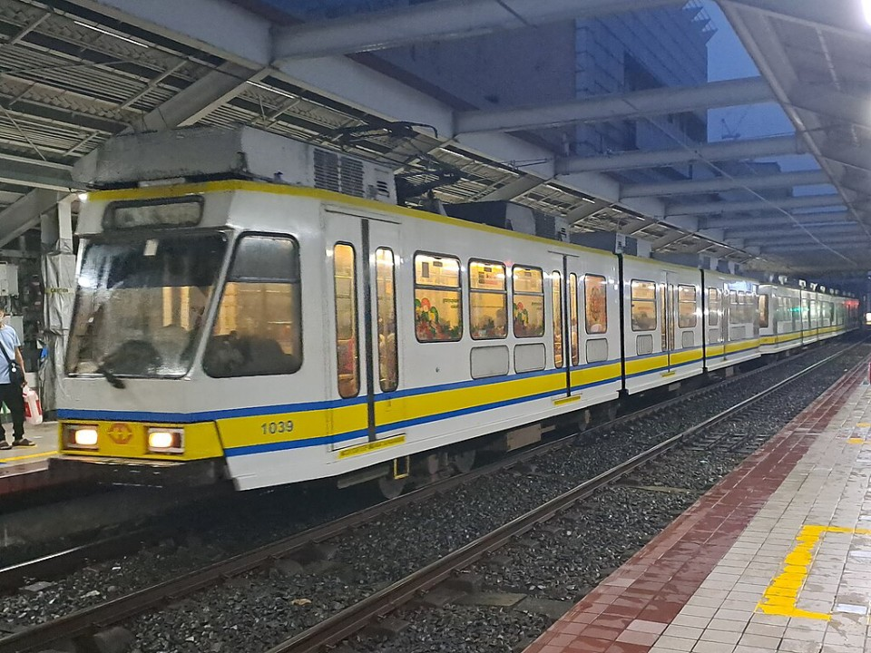
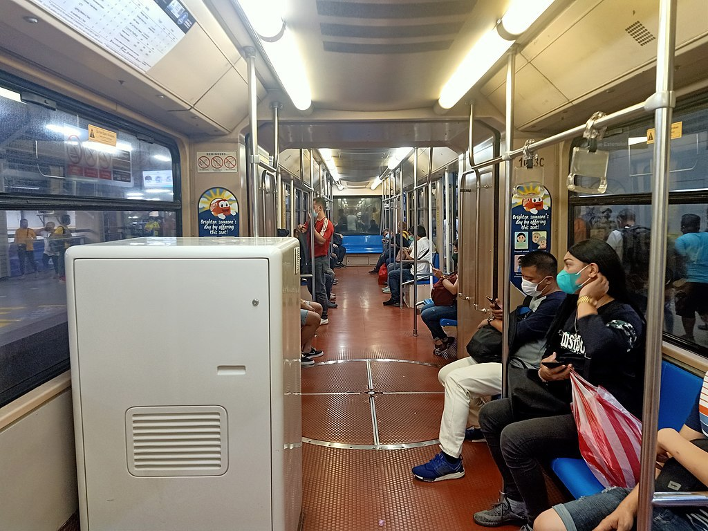
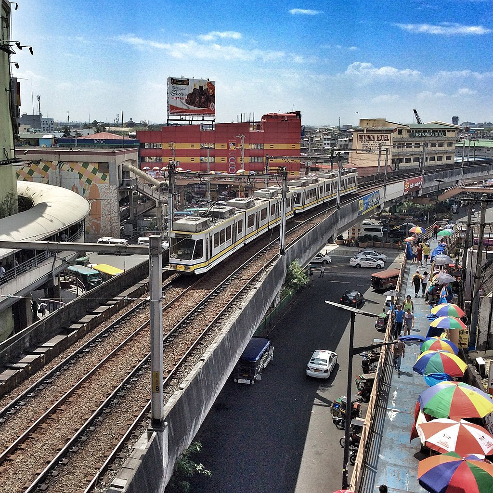
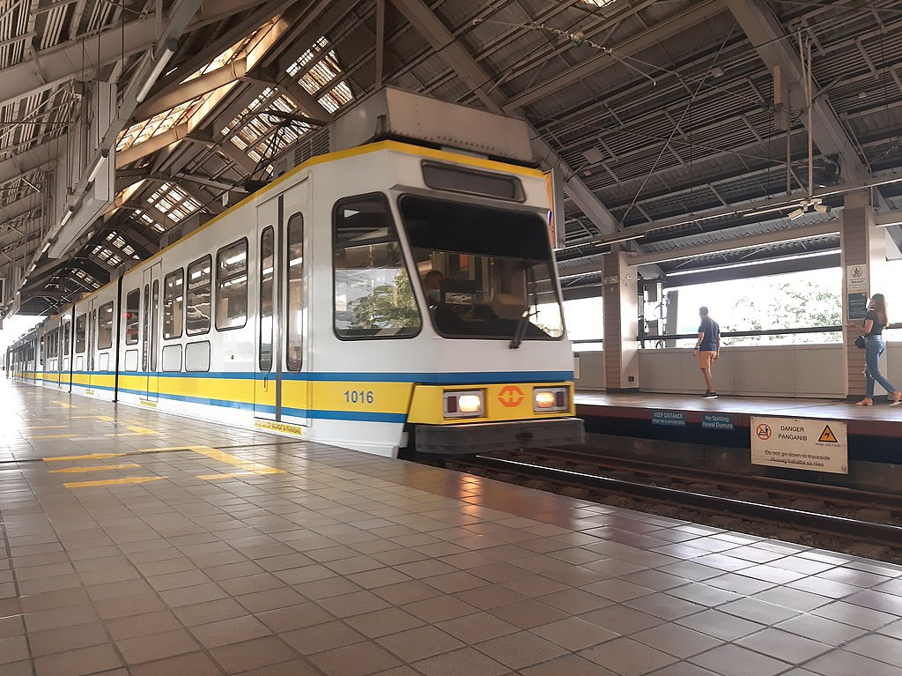
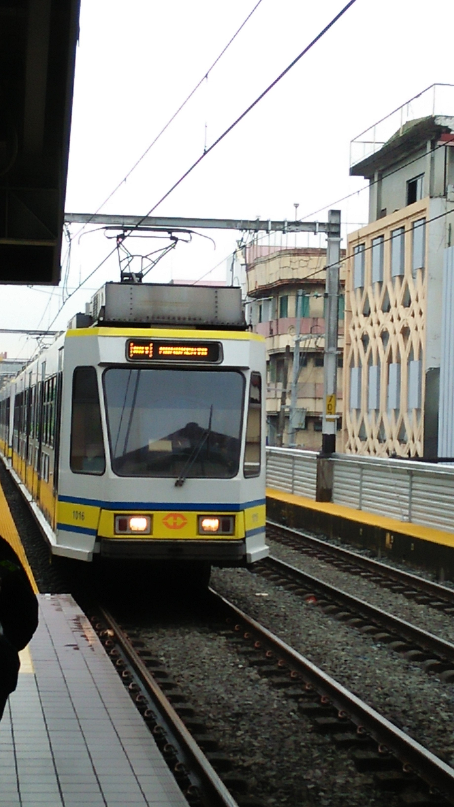
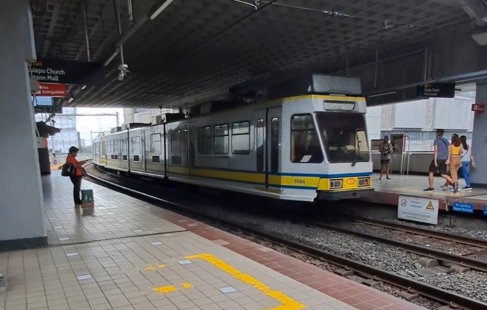

LRTA 1000 class
The LRTA 1000 class is the first-generation class of high-floor light rail vehicles (LRV) currently operated by the Light Rail Manila Corporation. It first entered service under the Light Rail Transit Authority in 1984.
| LRTA 1000 class | |
|---|---|
|

A 1000 class train at Carriedo station in 2023

Interior of 1000 class LRV (first refurbishment) with new onboard equipment installed during the 2022 signalling upgrade.
|
|
| In service | 1984-present |
| Manufacturer |
BN Constructions Ferroviaires et Métalliques[a]
Ateliers de Constructions Electriques de Charleroi[b] |
| Built at | Bruges, Belgium |
| Constructed | 1982–1983 |
| Entered service | December 1, 1984 |
| Refurbished | 1999–2001
2003–2008 2016–2017 |
| Scrapped | 2000 |
| Number built | 64 vehicles (32 sets, initially 2-car sets) |
| Number in service | 26 vehicles |
| Number scrapped or decommissioned | 38 vehicles |
| Successor | 13000 class |
| Formation | 2-3 cars per trainset |
| Fleet numbers | 1001–1064 |
| Capacity | 748–1,122 passengers |
| Operator(s) |
|
| Depot(s) | Baclaran |
| Line(s) served | LRT Line 1 |
| Specifications | |
| Car body construction | BI sheet |
| Train length |
2-car trainset: 59.59 m
3-car trainset: 89.37 m |
| Car length | 29.79 m[c] |
| Width | 2.5 m |
| Height | Unrefurbished: 3.272 m Refurbished: 3.525 m |
| Floor height | 900 mm |
| Platform height | 690 mm |
| Entry | Step |
| Doors | 5 per side; double-leaf swing plug-type; 1,300 mm[d] |
| Articulated sections | 3 per PRV |
| Wheel diameter | 660 mm (new) |
| Wheelbase |
Per bogie:
1.9 m (motor bogies) 1.8 m (trailer bogies) Bogie centers: 6.75 m on cab ends 7.5 m between trailer bogies Total (end-to-end): 21 m |
| Maximum speed | 60 km/h |
| Weight |
Unrefurbished: 41 t
Refurbished: 46 t |
| Axie load | 9 t |
| Traction system | ACEC thyristor chopper |
| Traction motors | 2 × ACEC 217.7 kW DC series-wound motor |
| Power output | 435.4 kW |
| Transmission | Right-angle link drive |
| Acceleration | 1.0 m/s² |
| Deceleration |
Service: 1.3 m/s²
Emergency: 2.08 m/s² |
| Auxiliaries | Auxiliary converter |
| HVAC |
Original: Forced ventilation; 12 units per LRV
Refurbished: Air-conditioned; roof-mounted duct type; 5 units per LRV |
| Electric system(s) | 750 V DC overhead wire |
| Current collector(s) | ACEC single-arm pantograph |
| UIC classification | Bo′+2′+2′+Bo′ |
| Wheels driven | 8 out of 16 per LRV |
| Bogies | Inside-frame type |
| Minimum turning radius | 25 m |
| Breaking system(s) |
Dynamic (regenerative and rheostatic)
Disc and electromagnetic track brakes |
| Safety system(s) |
ATS (1984–2007)
ATP (2007–present; for active trains) |
| Coupling system(s) | Semi-permanent |
| Multiple working | Within type |
| Track gauge |
1,435 mm
Standard track gauge |
| Seating | Longitudinal |

LRTA 1000 class LRVs under construction in the BN plant in Bruges, Belgium
The construction of the original 13.95-kilometer section of the LRT Line 1 was funded by a ₱300 million soft and interest-free loan from the Belgian Government. Additional funding for the project was later sourced from a ₱700 million loan provided by the consortium of ACEC (Ateliers de Constructions Electriques de Charleroi), BN (Constructions Ferroviaires et Metalliques, formerly Brugeoise et Nivelles), TEI (Tractionnel Engineering International), and TC (Transurb Consult). The trains were included in the second loan package, along with the power systems, signalling, and telecommunications.
The trains were manufactured by BN (now Bombardier Transportation Belgium S.A.), while the electrical equipment supplied were from ACEC. A total of 64 trains were built between 1982 and 1983.
The LRV design is an 8-axle rigid body consisting of three articulated cars. It is the only 8-axle light rail vehicle in the entire rolling stock of the LRT Line 1, as subsequent trains since 1999 will be built to the 6-axle design of the LRV.
Car body
The LRV is made of BI sheet. Each car has a length of 29.28 meters, a width of 2.5 meters, and a height of 3.525 meters.The 1000 class currently sports a white body livery with blue and yellow cheatlines. Prior to the first refurbishment, the 1000 class wore an orange and cream-white livery under the "Metrorail" branding, and notably had "mushroom-cap" roof-mounted ventilation.
Prior to the 2003 refurbishment, each light rail vehicle had 12 roof-mounted forced ventilation units. A refurbished light rail vehicle has five roof-mounted air-conditioning units.

A two-car 1000 class train approaching EDSA station

A 1000 class train approaching United Nations station

A newly refurbished 1000 class LRV with an LED destination front display

A LRT-1 1000 Class Train at Carriedo station
Interior
Each LRV has five door swing plug-type doors per side. Each train car has a capacity of 81 seated passengers and 293 standing passengers, carrying a total of 374 passengers. Seats are colored blue and are longitudinal-type.Mechanical
The bogies are of inside frame type. Each LRV has four bogies consisting of two motorized bogies at the ends of the LRV and two trailer bogies under the articulations. The primary suspension is a conical rubber, while the secondary suspension is a coil spring.Semi-permanent couplers are present at the ends of the non-cab section (section B) of the light rail vehicles.
Traction
A thyristor chopper traction control system is installed in the trains, and the traction motors consist of direct current (DC) straight-wound motors. Ateliers de Constructions Electriques de Charleroi (ACEC) manufactured the electrical and traction equipment for the trains.Breaking system
Dynamic brakes are used as a service brake. There are two disc brakes per trailer bogies acting as a service brake and two disc brakes per motor bogies used as an emergency and substitution brake. Each bogie has two electromagnetic track brakes for use in case of emergency.The transmission is a bogie-mounted transmission consisting of a right-angle link drive transmitted via gears and two elastic couplings.
The trains originally ran on a two-car configuration. In 1999, it was converted into a three-car configuration when LRTA refurbished the trains and purchased seven four-car trains from Hyundai Precision. However, not all of the train cars are capable to be coupled to form three-car sets.
Refurbishments
First refurbishment (1999–2001; 2003–2008)
In the early 1990s, the line faced problems due to poor maintenance and overcrowding. In addition, the forced ventilation units could no longer cool the trains properly.From 1999 to 2001, 32 LRVs underwent refurbishment, carried out by the Belgian consortium of BN (Bombardier Transportation Belgium S.A.), ACEC Transport SA, Transurb Consult, and Tractebel. Generally, this involved the repair of the carbody. The project included the introduction of the new livery, replacement of seats and other interior modifications, installation of new components, and modification of the roof for the installation of air conditioning units. Replacement and cleaning of electrical components were not included.
The 31 remaining LRVs that were not modernized in Phase 1 underwent refurbishment in 2004, carried out by the Light Rail Transit Authority. This involved the replacement of the electrical components of the trains, along with additional works in the 32 refurbished LRVs. Refurbishment was completed in January 2008.
Second refurbishment (2016–2017)
In September 2012, the then-Department of Transportation and Communications (DOTC) and the Light Rail Transit Authority (LRTA) announced a ₱203 million rehabilitation program for the trains as part of the LRT Safety, Reliability and Capacity Improvement Program of the DOTC which aims to rehabilitate the line. 23 trains were planned to be repaired, including the rehabilitation of 21 1000 class vehicles. This plan however was not realized.When the Light Rail Manila Corporation (LRMC) took over the operations and maintenance of Line 1 on September 12, 2015, only 77 LRVs across the three types of trains that run in the line were operational. To increase the running trains and reduce the headway, the company initiated the second refurbishment of the trains in 2016 worth ₱1 billion.
Twenty-five LRVs underwent restoration as part of the second refurbishment. The refurbishment includes the removal of rust from the carbody, repainting, replacement of flooring, and installation of new LED lightings and signalling systems. Out of service trains were also repaired and reentered revenue service. LRMC contracted Joratech Corporation for the second refurbishment of the trains. Restoration of the twenty-five LRVs were completed in May 2017, increasing the number of available LRVs to 102. As of November 2020, there are 33 light rail vehicles that underwent the second refurbishment.
Themed trains
When the Light Rail Manila Corporation took over the operations and maintenance of Line 1 in 2015, the railway operator began placing special themed decorations in the 1000 class LRVs since 2016. These include the yearly Christmas-themed and Valentine's-themed trains, special COVID-19 pandemic and vaccination-themed decorations, and a special "Gabay Guro"-themed train for teachers.Gradual retirement and decommissioning
The testing and commissioning of the 13000 class LRVs are now ongoing. As of 2021, there are eight decommissioned 1000 class LRVs from accidents, cannibalized trains and 1037, involved in a terrorist attack. These were previously stored at the LRT Line 1 Baclaran Depot until these were transferred to the LRT Line 2 Santolan Depot due to the expansion of the former, with plans to retire the entire 1000 class LRVs in the future.- On December 30, 2000, Rizal Day, a train (car number 1037) exploded at Blumentritt station as part of a series of explosions in a terrorist attack known as the Rizal Day bombings. The attack on Line 1 killed some 22 people and injured hundreds. The damaged train was decommissioned immediately after the incident. No confirmed plans were announced on its ultimate fate, whether it would be restored or scrapped. The train, together with other trainsets involved in accidents, have been ultimately sold for scrap.
- On June 24, 2010, two trains (1000 and 1200 class) collided at Balintawak station.
- On February 18, 2011, two trains (1000 and 1200 class trains) collided near Roosevelt Station in Quezon City on Friday at the reversing tracks, around a kilometer away to the east. No passengers were injured. This caused the Roosevelt and Balintawak stations to remain closed for two months until the stations were reopened on April 11, 2011. An investigation was conducted and was shown that one of the drivers was texting when the incident occurred. As a result, LRV 1015 sustained damage.
- On May 23, 2015, thousands of passengers were stranded after a train of Line 1 slammed into another train near the Monumento station. A train driver was hurt after the impact caused his head to slam into the dashboard of the train. The accident, later revealed to be caused by power fluctuation that affected the signalling system, forced passengers to alight from the station until services was restored around 1:00 PM at the same day.
- On March 10, 2016, a door in a 1st generation train car was left open while running between Central Terminal and Pedro Gil stations. The problem was fixed at the Pedro Gil station.
- On March 22, 2016, the doors of a 1st generation train car at the Central Terminal station failed to open, leaving passengers trapped inside the train.
- On September 26, 2016, a faulty door in a 1st generation train car suddenly slammed shut in less than a second. No one was injured.
- On September 26, 2018, a faulty 1st generation train door was unable to open at the Balintawak station. A passenger pushed the door open and was able to disembark. The next passenger pushed the door though it abruptly closed on him but managed to get through.
- On November 6, 2020, a 1st generation train car emitted smoke at Gil Puyat station at 2:00 PM due to a catenary fault. Passengers were evacuated, and the line implemented a provisional service from Balintawak to Central Terminal and vice versa. The situation normalized at 8:00 PM.
Original configurations of two-car trains.
Legend
| Either out of service, scrapped, or decommissioned |
| Set no. | 1 | 2 |
|---|---|---|
| 1 | 1001 | 1002 |
| 2 | 1003 | 1004 |
| 3 | 1005 | 1006 |
| 4 | 1007 | 1008 |
| 5 | 1009 | 1010 |
| 6 | 1011 | 1012 |
| 7 | 1013 | 1014 |
| 8 | 1015 | 1016 |
| 9 | 1017 | 1018 |
| 10 | 1019 | 1020 |
| 11 | 1021 | 1022 |
| 12 | 1023 | 1024 |
| 13 | 1025 | 1026 |
| 14 | 1027 | 1028 |
| 15 | 1029 | 1030 |
| 16 | 1031 | 1032 |
| 17 | 1033 | 1034 |
| 18 | 1035 | 1036 |
| 19 | 1037 | 1038 |
| 20 | 1039 | 1040 |
| 21 | 1041 | 1042 |
| 22 | 1043 | 1044 |
| 23 | 1045 | 1046 |
| 24 | 1047 | 1048 |
| 25 | 1049 | 1050 |
| 26 | 1051 | 1052 |
| 27 | 1053 | 1054 |
| 28 | 1055 | 1056 |
| 29 | 1057 | 1058 |
| 30 | 1059 | 1060 |
| 31 | 1061 | 1062 |
| 32 | 1063 | 1064 |